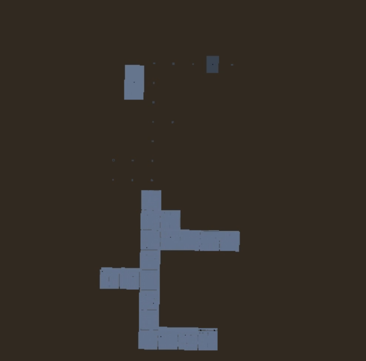

Yni's news (November 8)
SCP Map Generator update
I added checks for room placement, so the large room support is implemented. (Fun fact - certain amount of large endrooms will always spawn, because it is processing before the rest map generates. The amount of always spawning large endrooms is calculated by this formula: (Size of the zone) / 6)

Also I used Manhattan function for more straight generation (previously, it had some problems with too many corners.)
⚠️Important news - SCP project licensing.
My SCP-related assets relicense.
Since CC-BY-SA 3.0 is not compatible with anything except other CC licenses, and CC-BY-SA 4.0 is compatible only with GNU GPL 3, and those licensing have problem with Adaptation meaning, I relicense my rooms model (and modified statue, that may look like SCP-173) as CC-BY 4.0 for more wide usage (even for Unreal Engine). Other SCP-related assets I relicense under CC-BY-SA 4.0.
SCP: Outrun project relicense.
Continuing the previous topic, I announce relicensing SCP: Outrun under dual license: GNU GPL 3 for SCP Foundation usages, andMIT License for other usages. Also, I will remove CC-BY-SA 3.0 assets to avoid any trouble. (I already replaced MTF model with recently open-sourced SCP:SL one)
What about CC0 license for SCP: Outrun, since it is good for code and actually is a Creative Commons license, so CC-BY-SA 3.0 assets can be used?
I am thinking about it, but cannot decide:
- Pros: Licenses are now compatible, no need to change.
- Cons: This means, that I should also relicense most TGPY projects, used in SCP: Outrun, I am not ready for this... Also how much is right to relicense the WHOLE game code under the public domain, just for CC-BY-SA 3 needs? A whole game, not a library (like SQLite did)?
Currently, announced license terms (GPL for SCP Foundation usage, MIT license for other usage) will remain for SCP: Outrun.
What about SCP: Site Online?
It has some problems for implementing change, so I suggest to not continue SCP: Site Online development, since it may have problems sayed above.